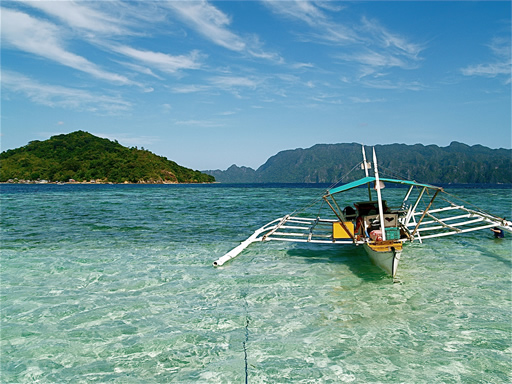

Welcome to Palawan Philippines. Voted as one of the Top 20 destinations of the world by National Geographic Magazine in 2011, be captivated by the paradise beaches and pristine natural wonders of Palawan. May this page serve as a simple appreciation of the beauty the islands of the Philippines have to offer.

